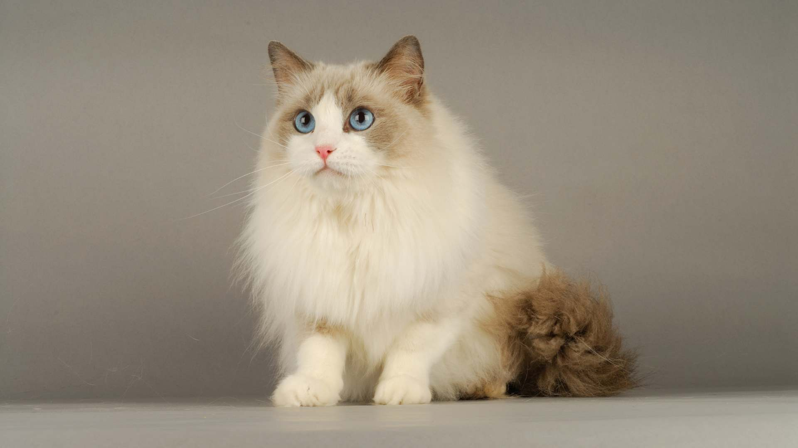
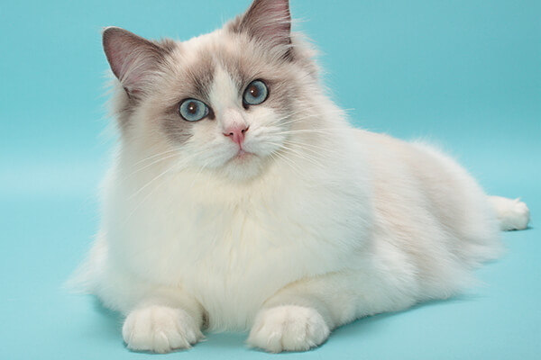

Fotos de Gatos
Um pouco sobre os gatos
Todos amam gatos!
Coisas que gatos gostam:
Gatos são aventureiros e brincalhões, mas não se engane, podem ser ferozes se deixa-los desconfortáveis.
- Comida;
- Luz de laser;
- Dormir;
- Muito carinho.
Coisas que gastos não gostam:
- Ficar sem comida;
- Maltratados;
- Carinho na barriga;
- Ser segunda opção.
Caso voce queira um gato, recomenda-se que adote um filhote em casas de ração ou de amigos!